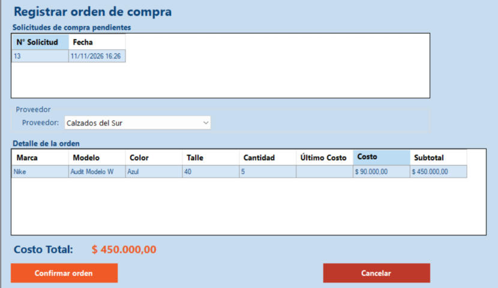

Inicio › Compra › Registrar orden de compra
Registrar orden de compra
Elegís una solicitud pendiente, el proveedor al que le vas a comprar y el costo de cada producto. Al confirmar queda registrada la orden, lista para recibir la mercadería.
Dónde está: Compra › Registrar orden de compraLo usa: AdministradorAtajo: F1
Pasá el mouse por encima de cualquier botón o campo de la pantalla para ver qué hace.

Qué hace cada elemento
- 1Solicitudes pendientesLas solicitudes de compra que todavía no tienen orden. Al abrir la pantalla queda elegida la primera; tocá otra fila para cambiar.
- 2ProveedorA quién se le hace la compra. La lista trae los proveedores cargados en Procesar proveedores.
- 3Detalle de la ordenLos productos de la solicitud elegida: marca, modelo, color, talle y cantidad. "Último costo" muestra lo que se pagó la última vez por ese producto, como referencia.
- 4CostoLo que cuesta cada par. Es obligatorio y se completa a mano: hacé doble clic en la celda y escribilo. El subtotal se calcula solo.
- 5Costo totalSuma de todos los subtotales de la orden.
- 6Confirmar ordenRegistra la orden con ese proveedor y esos costos. Después la pantalla se cierra.
- 7CancelarCierra la pantalla sin registrar nada.
Cómo hacerlo
- Elegí la solicitud en Solicitudes pendientes.
- Elegí el Proveedor.
- Hacé doble clic en el Costo de cada producto y escribí cuánto cuesta cada par. Tocá Enter.
- Si hace falta, también podés cambiar la cantidad pedida (entre 1 y 9999).
- Revisá el Costo total y tocá Confirmar orden. Aparece "Orden de compra registrada correctamente".
Tené en cuenta: No se puede confirmar si algún producto quedó sin costo.
Para saber más
Mensajes que puede mostrar el sistema 8
| Mensaje | Qué significa y qué hacer |
|---|---|
| AvisoNo hay solicitudes pendientes. | Primero hay que generar una solicitud en Generar solicitud de compra. La pantalla se cierra sola. |
| AvisoSeleccione una solicitud de compra. | Tocá una fila de la lista de arriba. |
| AvisoSeleccione un proveedor. | Elegí uno en la lista Proveedor. |
| ErrorComplete el costo unitario de todos los productos. | Falta el costo de al menos un producto. |
| ErrorEl costo unitario debe ser mayor a cero y no puede superar $10.000.000. | Corregí el costo; vuelve a quedar en cero hasta que cargues uno válido. |
| ErrorLa cantidad debe estar entre 1 y 9999. | Corregí la cantidad. |
| ErrorEl valor ingresado no es un número válido. | En costo y cantidad solo van números. |
| ListoOrden de compra registrada correctamente. | La orden quedó lista para registrar su recepción. |
Reglas a tener en cuenta 4
- Solo el Administrador registra órdenes de compra.
- Una orden se arma siempre a partir de una solicitud pendiente.
- El proveedor se elige una sola vez para toda la orden.
- Cada botón depende de los permisos del perfil.
Temas relacionados
SneakRush · Ayuda del sistema · Registrar orden de compra. Podés abrir esta ayuda desde cualquier pantalla con la tecla F1.